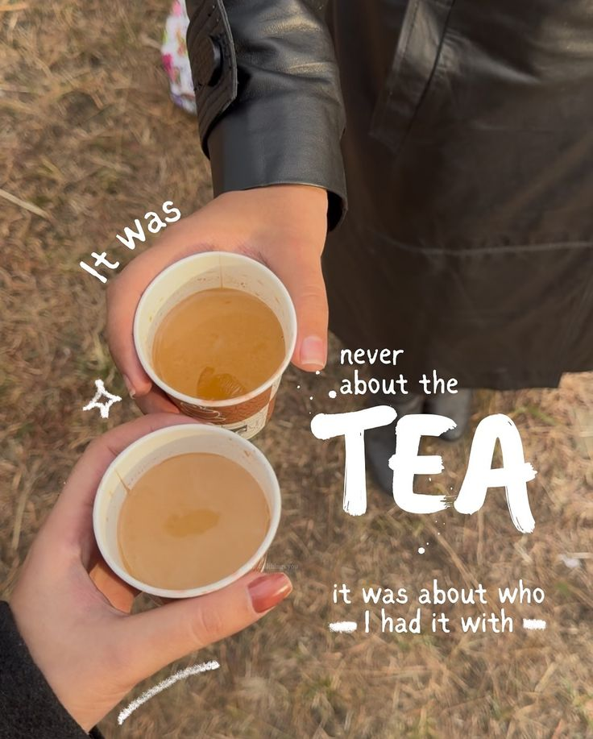

Desi Taste, Authentic Chai — Now in Vancouver
Elaichi Chai brings you traditional Indian chai, slow-brewed with aromatic spices and served with warmth in the heart of Vancouver.
Explore Menu

Our Story
Inspired by street-side chaiwalas and home kitchens across India, Elaichi Chai is about comfort, culture, and connection. Every cup is brewed fresh with care, just like home.
Find Us
Serving fresh chai in Vancouver.
Location: Fraser Street, Vancouver
Hours: Daily · 10 AM – 8 PM
Contact
Email: hello@elaichichai.ca
Instagram: @elaichichai